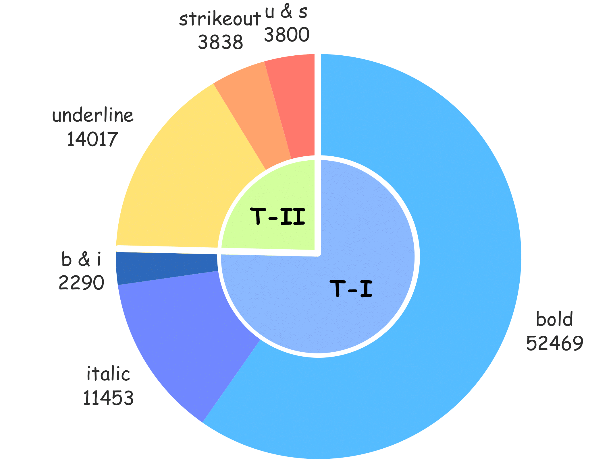

Recognising textual attributes such as bold,
italic, underline and strikeout is essential for
understanding text semantics, structure, and visual presentation. These
attributes highlight key information, making them crucial for document
analysis. Existing methods struggle with computational efficiency or
adaptability in noisy, multilingual settings. To address this, we
introduce TexTAR, a multi-task, context-aware
Transformer for Textual Attribute Recognition (TAR). Our novel
data-selection pipeline enhances context awareness, and our architecture
employs a 2-D RoPE mechanism to incorporate spatial context for more
accurate attribute predictions. We also introduce
MMTAD, a diverse, multilingual, multi-domain dataset
annotated with text attributes across real-world documents. Extensive
evaluations show TexTAR outperforms existing methods, demonstrating that
contextual awareness contributes to state-of-the-art TAR performance.
Textual Attributes in the dataset
| Image | normal | T1 | T2 | ||
|---|---|---|---|---|---|
| bold | italic | underline | strikeout | ||
 |
– | ✗ | ✗ | ✗ | ✗ |
| – | ✗ | ✗ | ✓ | ✗ | |
 |
– | ✓ | ✗ | ✓ | ✗ |
| – | ✗ | ✗ | ✓ | ✓ | |
| – | ✓ | ✓ | ✗ | ✗ | |
| – | ✗ | ✓ | ✓ | ✗ | |
| – | ✓ | ✗ | ✗ | ✓ | |

Chart – distribution of annotated attributes in our dataset.